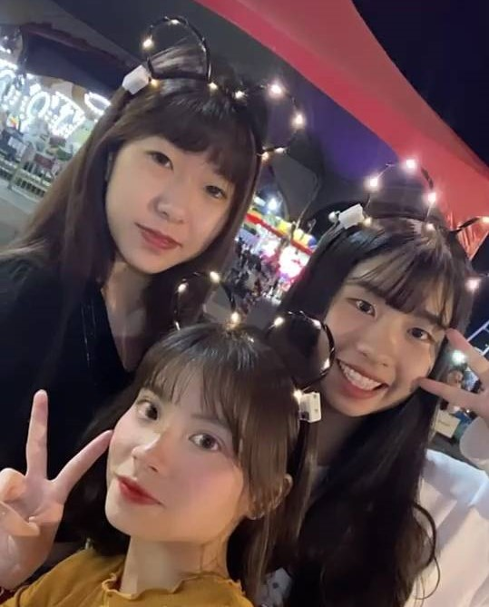
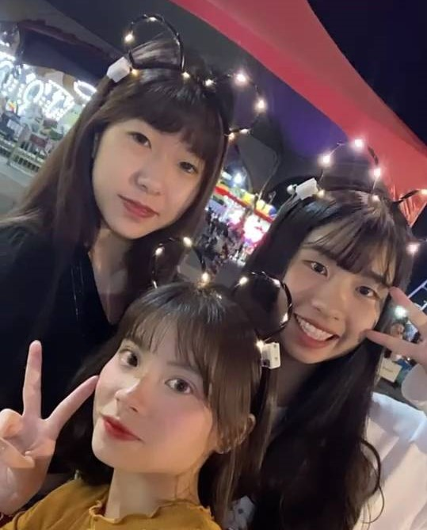

PROFILE
Info.
- 林庭妤 TING-YU LIN
- 2002 / 1 / 1 || Capricornus
- Chung Yuan Christian University ||
Information Management - Taiwan Keelung
About ME.
雖然外表看起來難以親近，但認識後會發現我是個瘋子...我蠻愛笑的 不愛生氣但是絕對
不要嘗試採我的底線 後果不堪設想! 在群體中屬於較外向型，因為不喜歡尷尬。喜歡腳踏實地的做事
努力把事情做到最好，而自己的缺點應該是做事情都會顧慮太多，這已經變向是一個困擾了，
我喜歡運動，所以都會去健身房還有去打排球，最特別的一項是潛水!!

 
